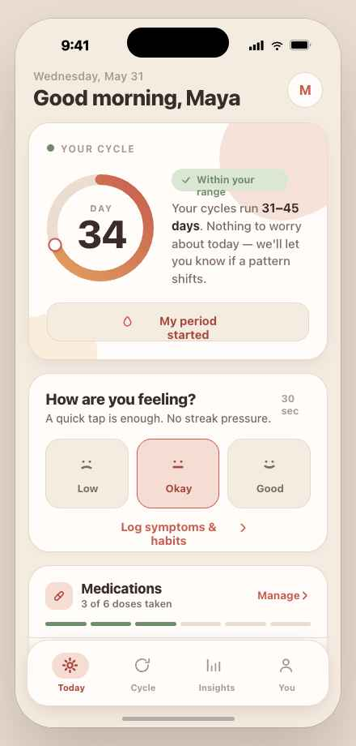
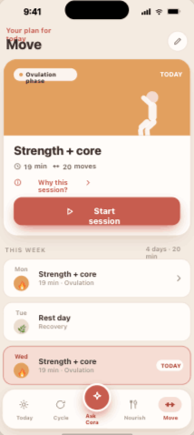
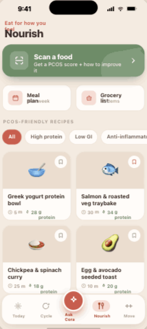
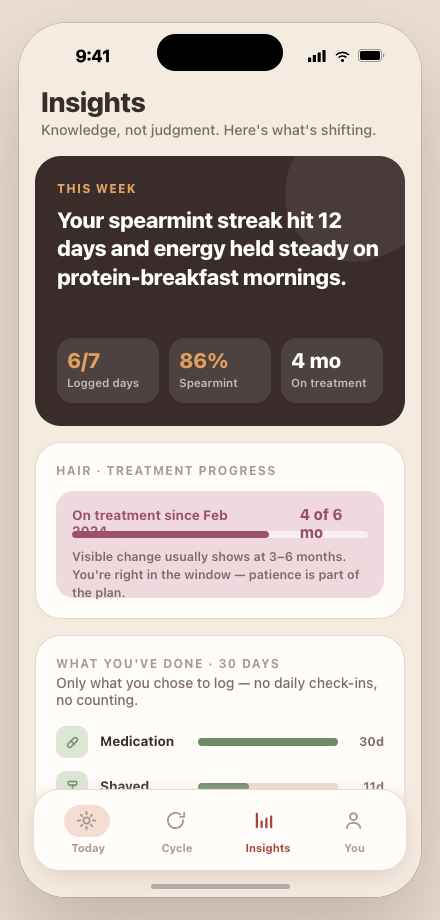

Everything PCOS asks of you, in one calm place.
Track your cycle and symptoms, move with workouts built around your hormones, eat for steadier energy, and finally see what's helping. Cora turns managing PCOS from a guessing game into a gentle daily rhythm.

PCOS touches everything. So does Cora.
PCOS doesn't stop at your cycle — it shows up in your energy, mood, skin, hair, weight and what you eat. Most apps track one slice and leave you to connect the rest. Cora brings it together: track it, act on it, and see what genuinely moves the needle. No streaks, no shame, no ads.
A whole PCOS toolkit, not just a tracker.
Flexible cycle tracking
Built for cycles that don't fit the textbook. Cora learns your range and tells you when something's actually shifting — instead of flagging every late day as a problem.
Movement that works with your cycle
A custom plan tells you exactly what to do each day — guided strength and low-impact sessions synced to your phase, plus a gentle nudge to take a walk. Movement for PCOS, not punishment.
Eat for how you feel
Scan any meal for a PCOS score, cook from hundreds of PCOS-friendly recipes, and plan your week with an auto-built grocery list. Steady energy, never calorie-shaming.
Gentle daily check-ins
A quick tap is enough. Log mood, energy, symptoms and habits in seconds — no streak pressure, no all-or-nothing logging.
Meds, supplements & treatments
Track medications, supplements and hair or skin treatments with gentle reminders — and watch over time what's genuinely working for you.
Ask Cora, anytime
Plain-language answers about PCOS, your symptoms and your own data — grounded, calm and judgment-free, whenever a question pops up.
Up and running in three calm steps.
Tell Cora about you
A short, friendly setup — your cycle history, symptoms, goals and how you like to move. No labs or jargon required.
Get your daily rhythm
Cora hands you a simple plan for the day — what's worth logging, a movement session or walk, and meal ideas — all tuned to your cycle and energy.
See your patterns
Cora connects the dots over weeks and months, surfacing what's helping and giving you a clean summary for your next appointment.
Movement for PCOS, not punishment.
Answer four quick questions and Cora builds a movement plan around your energy and your cycle. Each day it tells you exactly what to do — no guesswork, no overwhelm — and on rest days, a gentle walk is all you need.
- One clear session a day, synced to your cycle phase
- Guided demos for every move — strength & low-impact
- Walk reminders and rest days, never streak guilt

Eat for steadier energy, not less of everything.
Point your camera at a meal for an instant PCOS score and a clear “why.” Browse hundreds of protein-forward, PCOS-friendly recipes, then turn a week of meals into a ready grocery list — all without a single calorie lecture.
- AI food scanner with a PCOS score and how to improve it
- Hundreds of PCOS-friendly recipes, filtered to your needs
- Weekly meal planner with an auto-built grocery list

Finally, answers that feel like yours.
Cora watches the quiet patterns you can't hold in your head — connecting movement, food, meds and mood to your cycle — and turns months of check-ins into a clear story you can act on, and share with your doctor.
- See which habits track with better energy and clearer skin
- Understand your real cycle range, not a textbook 28 days
- Export a clean, doctor-ready summary in a tap

Your health data belongs to you — and only you.
Cora is built for PCOS, not for ads. We don't sell your data, we don't run ad networks, and we never will. It's that simple.
Encrypted end to end
Your entries are encrypted in transit and at rest.
Never sold or shared
No data brokers. No advertisers. No exceptions.
Yours to delete
Export or permanently erase everything, any time.
The tracker that finally gets it.
"The first app that didn't make me feel like a failure for a 40-day cycle. Cora just… got it. I cried a little, honestly."
"I brought Cora's summary to my endo and she actually used it. Years of confusing symptoms suddenly made sense on one page."
"No streaks, no ads, no shame. I finally figured out spearmint tea was actually helping. Worth every penny of Plus."
Manage your PCOS, one calm day at a time.
Join thousands using Cora to track, move, eat and understand their PCOS — a little more calmly.
Cancel anytime · Doctor-ready summaries · Encrypted & never sold